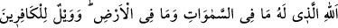
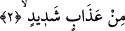

kitaptır.” Bu ifâde birazdan gelecek olan “Andolsun biz Musâ’yı da âyetlerimizle
göndermiştik...” âyetine uygun düşmektedir.
“Güçlü olan Allah’ın yoluna” ifâdesinde yolun ne kadar büyük olduğunu göstermek
maksadıyla “sırât (yol)” kelimesi, “el-Azîz (güçlü)” kelimesine izâfe edilmiştir. Bu
yoldan maksad İslâm dînidir. Çünkü İslâm hem cennete hem kurbete/Hakk’a yakınlığa
hem de vuslata götüren bir yoldur.
el-Aziz, dînine bağlı olanların intikâmını düşmanlarından alan galib/güçlü demektir.
el-Hamîd (övgüye lâyık) kelimesi ise, intikam alması sâyesinde kullarından övgüyü hak
eden, övgüye lâyık, övülmüş mânâsınadır.
Âyette şuna da işâret vardır: Cismânî zulmetlerden ve rûhânî nurlardan geçmek,
Allah’a giden yegâne yoldur. Allah, kulunun kendisine ancak bu perdelerden çıkarak
ulaşabileceği bir Aziz’dir. Yine O, cemâl ve celâlinin kemâl üzere olmasından dolayı
izzet, kibriyâ ve azâmet perdeleriyle perdelenmeyi hak eden övgüye lâyık bir varlıktır.
2. O Allah ki göklerde ve yerde olanların hepsi O’nundur. Şiddetli azabdan dolayı
kâfirlerin vay hâline!
“O Allah ki göklerde ve yerde olanların” akıllı-akılsız bütün varlıkların “hepsi
O’nundur.” Bu ifâde önceki âyetteki “el-Azîzi’l-hamîd” ifâdesini açıklamak üzere ona
atfedilmiştir. Çünkü Allah lâfzı, varlığı zorunlu olan ve âlemi yaratan zâtın özel ismidir.
Âyette şuna da işâret vardır: Seyr ilallah ehlinin seyri, sıfatlarda son bulmaz. Burada
sıfatlar el-azîz ve el-hamîddir. Ancak onların seyri zâtta seyr ile son bulur. Zât ise
Allah’tır. Tüm varedilenler O’nun fiilleridir. O’nun fiillerinde kalanlar sıfatlarına
ulaşamaz. Sıfatlarında kalanlar O’nun zâtına ulaşamaz. İttisâl ve infisâl olmaksızın
kendi benliğinden geçip Allah Teâlâ’nın hüviyyetine çıkmak sûretiyle kim O’nun zâtına
ererse O’nun hem sıfatları hem fiilleri konusunda O’nun zâtından faydalanırlar.
Kemâl Hocendî (k.s.) şöyle der:
Mâsivâdan kesilmedikçe Hakk’a vuslat müyesser olmaz
İlk kesilme mâsivânın cümlesinden kesilmektir
Molla Câmî (k.s.) ise şöyle der:
Tenzih ederiz seni yoktur ilmimiz ancak
Senin bize öğrettiğinden, ilhâm ettiğinden başka!